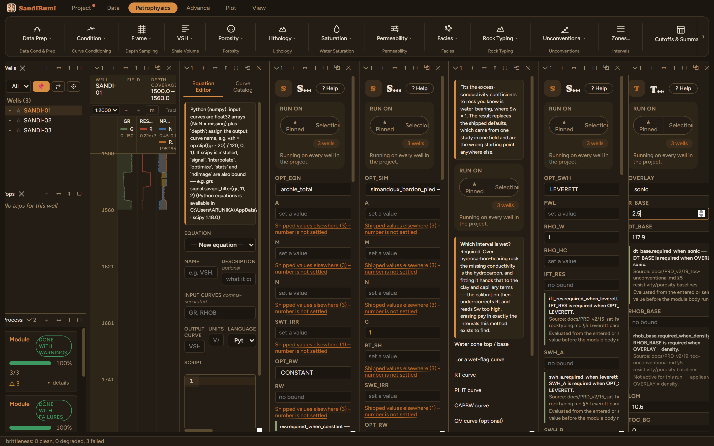

Passey's ΔlogR reads organic richness from the separation between deep resistivity and a baselined porosity curve (sonic here) converted to TOC with the maturity term 10^(2.297−0.1688·LOM). A Schmoker-Hester density TOC rides along as an independent cross-check whenever RHOB is present.
"R_BASE must be set — Baseline resistivity (non-source interval)"
Baselines ship absent because TOC is very sensitive to them, and a baseline belongs to your section, not to a default.

On these wells: 3 clean, and honest numbers. ΔlogR is negative at 574 of 590 samples: a water-and-gas-bearing clastic section is not a source rock, and the overlay says exactly that (TOC floors to the background). The 16 positive samples sit in the gas sand, hydrocarbon resistivity, not organics, faking a small separation: the classic gas-zone false positive Passey's own paper warns about, worth knowing before quoting any TOC from a reservoir interval. And the Schmoker cross-check reads a median 7.4 wt% here, absurd on a 2.3 g/cc clastic, because that fit is Bakken-specific: it is a cross-check on a real source-rock section, never a substitute.